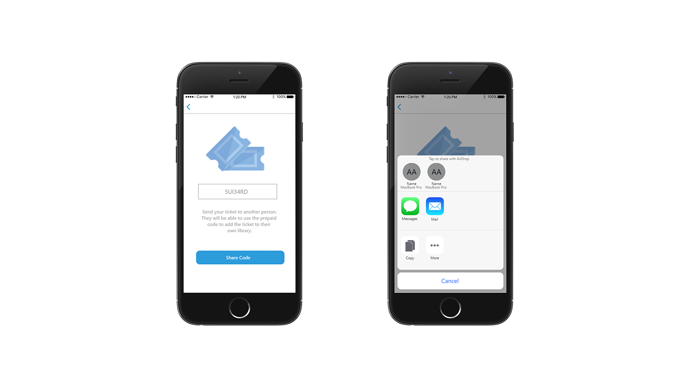
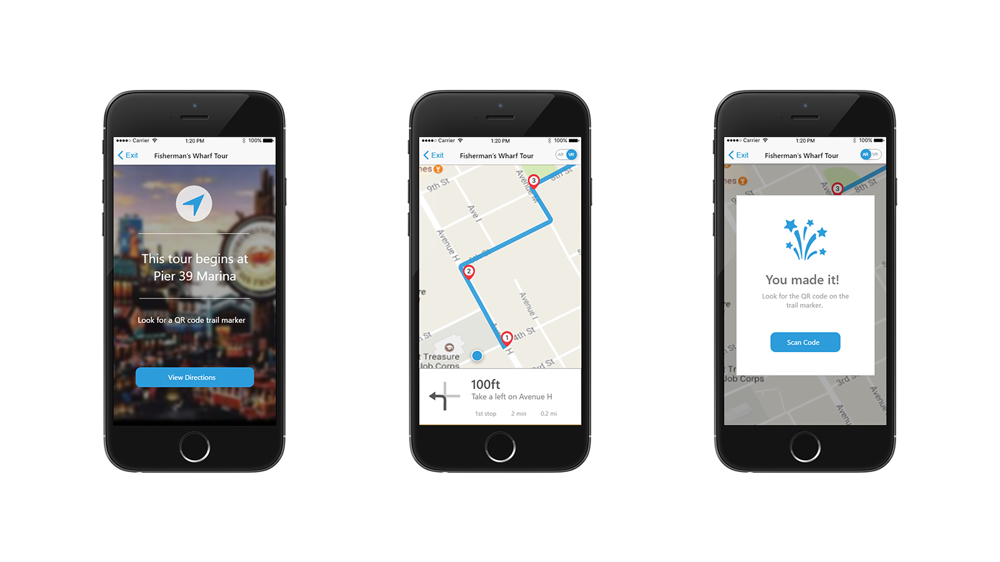
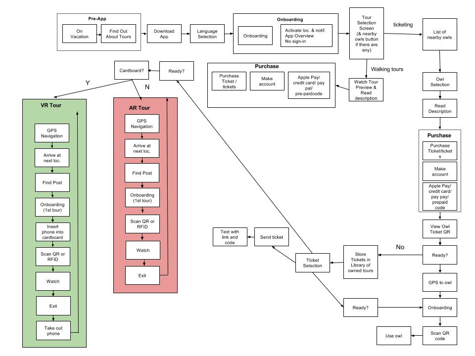

Owlized is a Berkeley based startup in the tourism space that provides a better way for tourists to connect with the destinations they are visiting via destination based virtual reality kiosks and virtual / augmented reality walking tours. Through Berkeley Innovation, I was provided with the opportunity to work with 3 other students to design the Owlized app that would serve as the hub for all user needs, from finding local tours, sending tickets to friends or family members, and walking purchased tours.
Owlized needed a way for potential users to purchase tickets for physical VR Kiosks without the guaranteed presence of a physical ticket booth. Moreover, Owlized needed a centralized method for potential users to purchase tickets for walking tours, access purchased tours, and navigate through the walking tour. s
Before we started designing,we needed an understanding of what potential users found important. By working to understand the goals, values, and demographics of the potential users of Owlized, we would be better able to create an app that suited their wants and needs. In order to understand the potential users, we interviewed domestic and international tourists at Fisherman’s Wharf in San Francisco and on campus at UC Berkeley.
Some of the questions we asked during the interview were:
After interviewing our subjects we created an affinity diagram to identify common trends in the responses of our subjects. After creating the affinity diagram, we settled on designing around three main findings.
Based on the findings of our user research, we identified 4 features that would be necessary for the Owlized app to be successful.
First, given that many users were not familiar with AR/VR technology, the app would need effective and frequent onboarding for first time users. We implemented a high level onboarding upon entering the app for the first time, and a more in-detail onboarding once starting a tour.
Given that people vacation together rather than alone, we advocated for ticket sharing across accounts via prepaid codes. In a family setting, this would allow a parent to purchase all the necessary tickets for the family, and then send them to their kids via sms message rather than attach a payment method to a childs account. By allowing users to send tickets they purchased to others, we hoped to make Owlized tours inclusive to group settings without forcing all group members to have payment methods attached to their accounts. 
Knowing that most tourists are largely unfamiliar with where they are visiting, we designed the app to house navigation internally, rather than handle navigation in an external app such as google or apple maps. Walking tours require navigation in general, and by keeping the navigation in app rather than external, we hoped to better integrate the content of the tours with the navigation between points in the tour, allowing for users to contextualize their location based on their progress in the tour, rather than by their location in a city or park they are unfamiliar with. 
After identifying the goals, needs, and wants of our users, we looked to translate these values into tangible features and screens for the app. The first step to designing the screens of the Owlized App was determining what screens were necessary to implement the features the client needed along with the features that users would find necessary. We worked with the client to integrate the results of our research with his expectations of the app to create a journey map of the user experience. From here, we began wire framing low fidelity prototypes of the owlized app. 
After internal design critiques of our paper prototypes, we moved to interactive mid fidelity prototypes. Using Figma and Invision, we designed a working prototype that was ready for usability testing. For our usability testing, we utilized tourists at Fisherman’s Wharf and on campus at UC Berkeley, along with our friends to increase the number of eyes our prototype would be able to get in front of.
During usability testing, we asked users to complete 3 tasks: purchasing a ticket, starting a walking tour, and navigating through a walking tour, while we tracked their behavior and recorded their feedback. From their responses we arrived at three main takeaways from our usability testing.
Based on the feedback we received during usability testing, we began iterating to high fidelity prototypes. We used a mix of Adobe XD, Figma, and Invision to implement solutions based on the issues identified with our mid fidelity prototype.
With these solutions in mind, we moved from medium fidelity to high fidelity. Using Adobe XD, we implemented our solutions and presented our final deliverable to Owlized during the Berkeley Innovation showcase.
This was my first project with Berkeley Innovation, and first UI/UX project as a whole. I learned more than I can cover in a few bullet points, and much of what I learned during this project I now probably take for granted. However, a few things stick out to me.
What I learned
What We Could Have Done Better